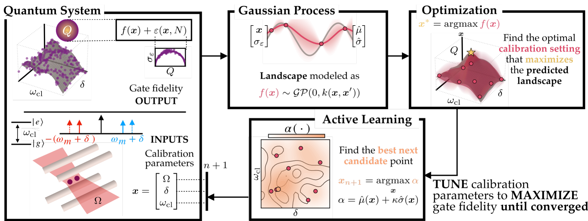

Active Learning for Calibrating Entangling Gates via Surrogate-Based Optimization

The fidelity of a quantum gate is sensitive to small deviations in the physical control parameters, and often necessitates on-device calibration. We present an active learning framework based on Bayesian optimization with a Gaussian Process surrogate to accelerate the discovery of the optimal parameter set. We validate the technique through numerical calibration of the laser amplitude and frequencies that implement the trapped-ion Mølmer Sørensen gate.
- Introduce known heteroskedastic Gaussian Process regression to model the quantum projection noise of the data
- Show that a Gaussian Process can model the Hamiltonian dynamics of a quantum system
- Quantify fidelity limits due to quantum projection noise and design space ranges